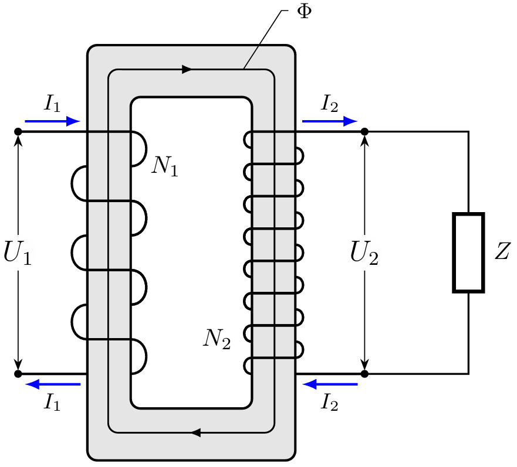
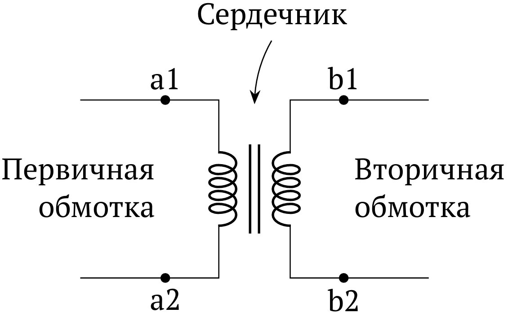
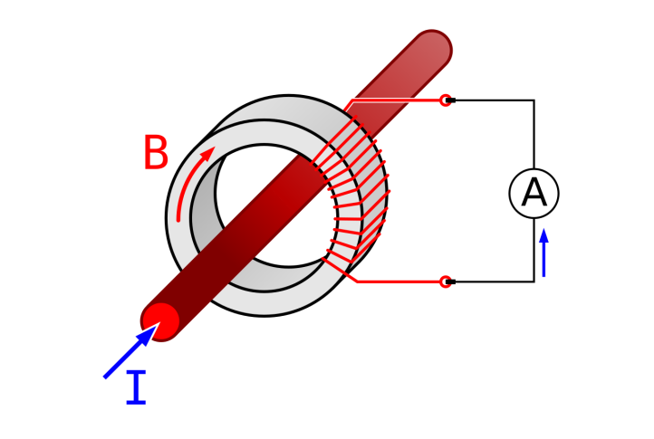
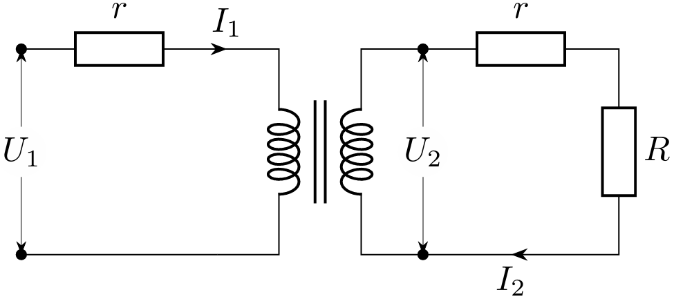
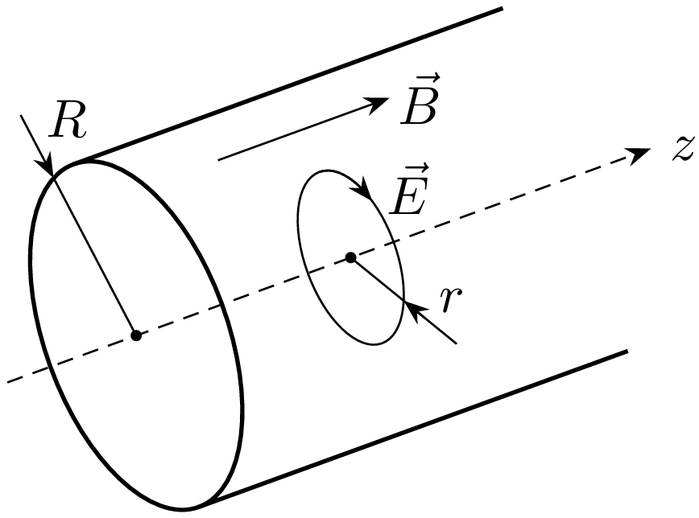
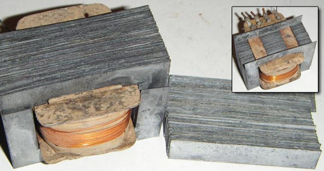
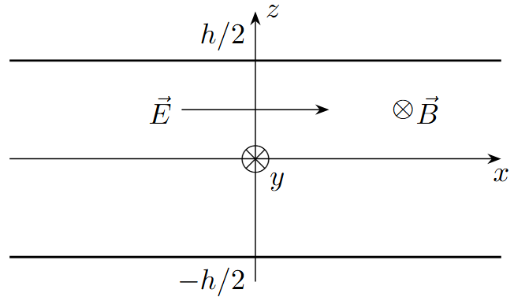
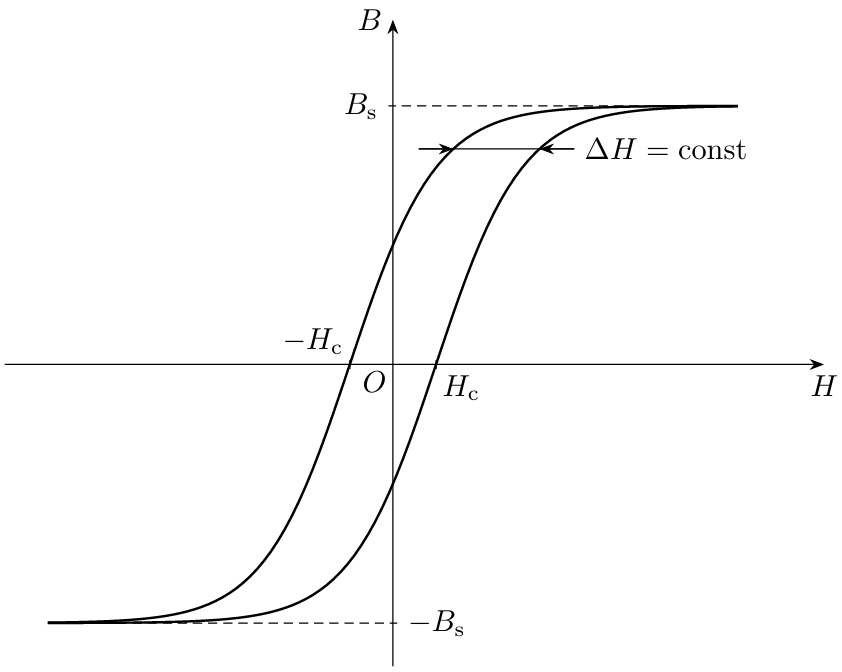

X26 (2026) — English translation
A transformer is an electromagnetic device having two or more inductively coupled windings. It is designed to convert an AC system with one parameters into an AC system with other parameters. Most often, voltage and current are transformed, but the signal frequency does not change. In all points of the problem, you can use $\mu_0$ to express formulaic answers where necessary. Use $\mu_0=4\pi\cdot10^{-7}~Гн/м$ for calculations. Unit vectors along the directions are denoted by the letter c $\wedge$. For example, the unit vector along the $x$ axis is denoted $\hat x$. Give all numerical answers in SI units.
In all points of the problem, you can use $\mu_0$ to express formulaic answers where necessary. Use $\mu_0=4\pi\cdot10^{-7}~Гн/м$ for calculations.
Unit vectors along the directions are denoted by the letter c $\wedge$. For example, the unit vector along the $x$ axis is denoted $\hat x$.
Give all numerical answers in SI units.
The simplest transformer consists of a ferromagnetic core and two windings wound on it with the number of turns $N_1$ and $N_2$. The ohmic resistance of the windings everywhere except part C can be neglected. The magnetic permeability of the core is $\mu\gg 1$, due to which complete magnetic coupling is ensured between the windings of the transformer - that is, we can assume that the magnetic field flux $\Phi$ inside the core is not dissipated.
For the positive direction of the magnetic flux in the winding, take the direction of the flux that would be created by the current flowing in this winding along the current directions indicated in the figure. For the positive direction of the magnetic flux through the cross section of the core, take the direction of the flux, indicated in the figure by the letter $\Phi$. The positive direction of the current is indicated in the figure. The voltage on the windings is equal to the difference between the potential of the upper point and the potential of the lower point in the figure. The mutual induction coefficient of windings $i$ and $j$ is defined as \[M=\dfrac{\partial \Phi_j}{\partial I_i},\]where $\Phi_j$ is the flux through winding $j$, and $I_i$ is the current in the winding $i$.

In points A1 - A3 we find the inductances of the windings $L_1$, $L_2$ and their mutual induction coefficient $M$.
To simplify calculations, assume that the cross-sectional area of the core $S$ is constant. The length of the core is $\ell\gg\sqrt{S}$.
The interaction of the two windings is completely described by the found quantities $L_{1}, L_{2}$ and $M$. In the diagrams, the transformer is depicted as follows:

Find the magnetic induction emf $\mathcal E_{1}$ and $\mathcal E_{2}$ arising in the primary and secondary windings, respectively. Express your answer in terms of $\dot{{I}_{1}}, \dot{{I}_{2}}, L_{1}, L_{2}$ and $M$.
A sinusoidal voltage $U_1(t)=\operatorname{Re}\left[\tilde U_{1} e^{-i \omega t}\right]$ with an amplitude $U_0=|\tilde U_1|$ was applied to the primary winding. All quantities in the system will also change sinusoidally, which means you can enter the corresponding complex amplitudes: $$ I_{1}(t)=\operatorname{Re}\left[\tilde{I}_{1} e^{-i \omega t} \right],\quad I_{2}(t)=\operatorname{Re}\left[\tilde{I}_{2} e^{-i \omega t} \right],\quad U_{2}(t)=\operatorname{Re}\left[\tilde{U}_{2} e^{-i \omega t}\right]. $$Пусть ко вторичной обмотке подключена цепь с импедансом $Z$. Для записи ответов вы можете явно использовать вещественную и мнимую части $Z$: $\operatorname{Re}Z$ и $\operatorname{Im}Z$ respectively.
The main application of transformers is to reduce the amplitude of the current (and therefore increase the amplitude of the voltage) before applying it to the power line. This is necessary in order to reduce ohmic losses in the wires. For such transformers, called power ones: \[ k_{I}, k_{U} \gg 1 \tag{1}\]
Due to the presence of mutual induction, the voltage source $U_1$ can do work despite the absence of active resistance connected directly to it.
If you've ever done an experiment with electricity, you should know how easily an ammeter can burn out at high currents! To prevent such incidents, a measuring current transformer is used, which reduces the current by a fixed number of times. The primary winding of the transformer is a conductor with the measured alternating current $I$, and an ammeter is connected to the secondary winding with the number of turns $N$. The internal resistance of the ammeter is very small, so in fact the secondary winding of the transformer operates in a mode close to a short circuit. The magnetic permeability of the core is $\mu\gg 1$, its radius is $R$ and is much greater than the thickness of the wire.

To use transformers for industrial purposes, it is necessary to be able to determine and minimize energy losses in them. Energy in transformers is lost mainly due to the following factors: Joule losses in the windings Joule losses in the thickness of the core due to induced eddy currents Magnetization reversal (ferromagnetic hysteresis) In the following parts, the influence of each of the factors will be studied, considering these factors to be independent and small, and the efficiency of the transformer will also be calculated. For simplicity, we will assume that the number of turns in the primary and secondary windings is the same. For numerical calculations, use the following values: Core length $\ell=25~см$ Cross-sectional area of the core $S=100~см^2$, its radius can be considered constant Saturation induction of the core material $B_\mathrm s=1.5~Тл$ Coercivity of the core material $H_\mathrm c=20~А/м$ Magnetic permeability of the core material $\mu=1000$ Number of turns in each winding transformer $N=100$ Wire diameter $d=0.6~мм$ Copper conductivity $\sigma_\mathrm w=5.8\cdot 10^7~Ом^{-1}\cdot м^{-1}$ Core material conductivity $\sigma_\mathrm c=30\cdot 10^3~Ом^{-1}\cdot м^{-1}$ Frequency of supplied voltage $f=50~Гц$ Thickness of magnetic core plates $h=0.4~мм$ Supply load resistance $R=160~Ом$ Effective (rms) source voltage $U_{\mathrm{rms}}=220~В$
To use transformers for industrial purposes, it is necessary to be able to determine and minimize energy losses in them. Energy in transformers is lost mainly due to the following factors:
In the following parts, the influence of each of the factors will be studied, considering these factors to be independent and small, and the efficiency of the transformer will also be calculated. For simplicity, we will assume that the number of turns in the primary and secondary windings is the same.
For numerical calculations, use the following values:
We will simulate the resistance of the windings by adding a small resistance $r$ to the primary and secondary windings (see figure below).

Obtain expressions for the power of Joule losses $P_{r1}$ and $P_{r2}$ released in the primary and secondary windings. Express your answer in terms of the amplitude of the input voltage $U_0$, as well as $r$, $\omega$ and $L$.
Calculate the total power of Joule losses on the windings $P_{r} =P_{r1} + P_{r2}$ for a transformer whose parameters are given earlier in the problem. Provide detailed calculations for your calculations in the solution sheets.
If an alternating magnetic field is created in a conducting material, an eddy electric field and associated Foucault currents arise in it. This leads to additional energy losses. Let us consider a long cylindrical core with cross-section $S$ and length $\ell$ (we will assume that $\ell\gg\sqrt{S}$). The magnetic field $\vec B(t)=\operatorname{Re}\left[B_0 \hat z e^{-i\omega t}\right]$ penetrates this core along its axis $z$. Neglect the influence of Foucault currents on the magnetic field distribution.

To reduce losses, the core is made layered along its axis - thin layers of non-conducting material are laid between the layers of the ferromagnet. In this case, Foucault currents can only be excited separately in each plate.
Single-phase transformer. Its core is assembled from plates isolated from each other to reduce losses from Foucault currents

Let us consider such a plate with thickness $h$ in an external field $\vec B(t)=\operatorname{Re}\left[B_0 \hat y e^{-i\omega t}\right]$ directed parallel to it.

It is easy to show that in such a system the excited electric field is also parallel to the plate and perpendicular to the magnetic field. We will look for it in the form:\[\vec E(z,t)=\operatorname{Re}\left[Az\hat xe^{-i\omega t}\right].\]
Finally, let's look at the effect of hysteresis. We assume that under the influence of the magnetic field strength created by the current in the windings, the magnetic field induction inside the core describes the magnetization curve shown in the figure below. The width of this curve along $H$ is constant, the magnetic field varies in the range from $-B_\mathrm s$ to $+B_\mathrm s$ (the so-called saturation induction) and is zeroed at $\pm H_\mathrm c$ (the so-called coercive force).

Source: https://pho.rs/p/4797